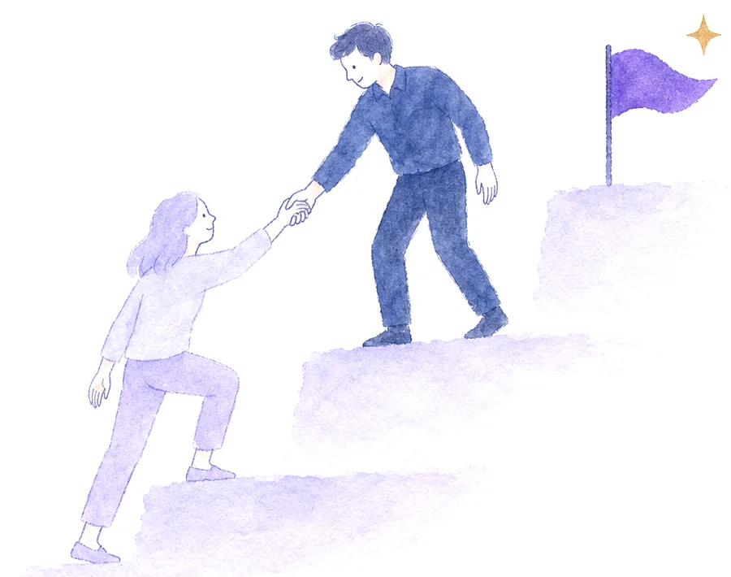
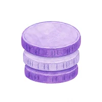
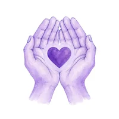
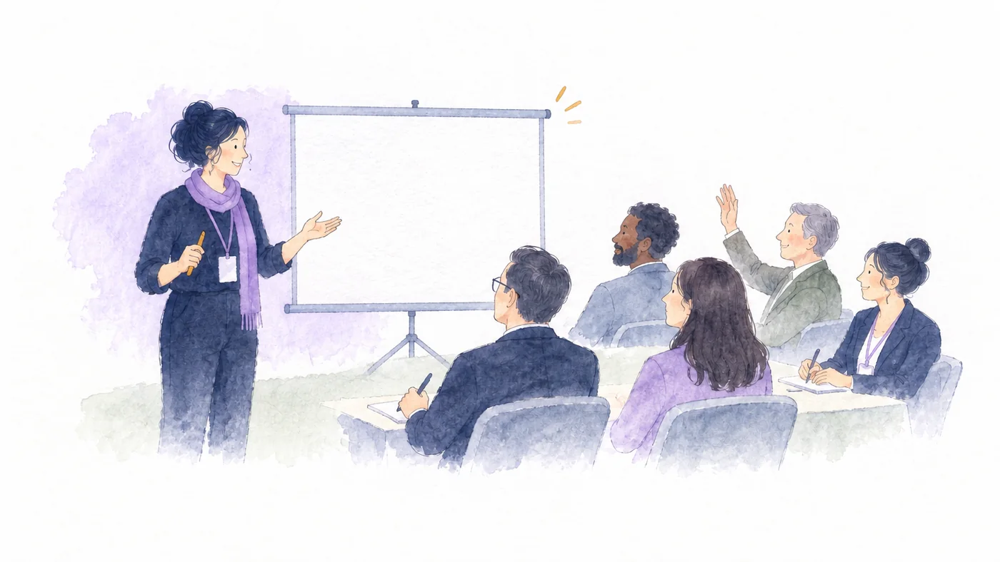
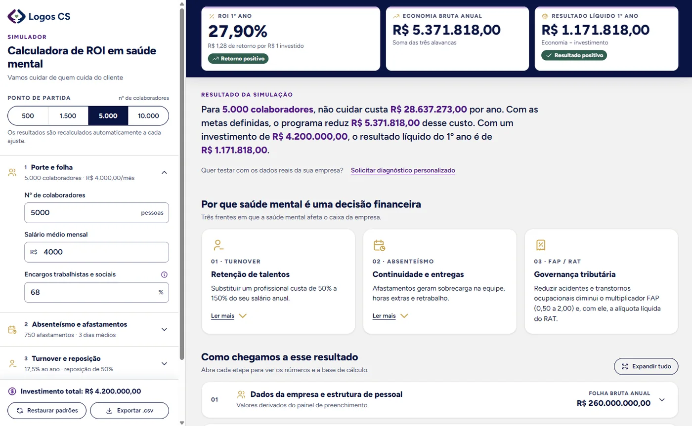
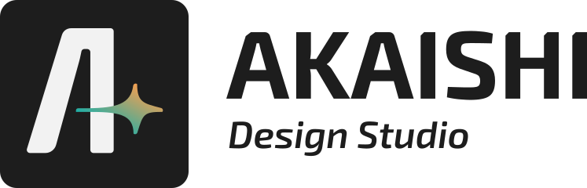

A NR-1 já exige a gestão dos riscos psicossociais.
Saia com um caminho claro para começar a mapeá-los.
[dado com fonte primária, a levantar]
Fox Human Capital + Logos CS
Gerando ROI pelo cuidado e cumprindo o que a nova NR-1 pede

A NR-1 já exige a gestão dos riscos psicossociais.
Saia com um caminho claro para começar a mapeá-los.
[dado com fonte primária, a levantar]

Afastamentos e rotatividade pesam no caixa.
Veja quanto custa não cuidar e quanto o cuidado devolve.
546.254 benefícios por saúde mental em 2025 [conferir a fonte]

O RH carrega o tema, mas não faz sozinho.
Leve primeiros passos que cabem na rotina do RH e das lideranças.
[depoimento, com autorização]
Quarta-feira, 9 de dezembro, das 8h30 às 11h, na Vila Olímpia, em São Paulo
Apresentação institucional.
Mercado, NR-1, objetivo e metodologia.
Confiança na gestão, reconhecimento e conflito entre trabalho e família.

A calculadora de ROI em saúde mental traduz cuidado em número. [validar com o Leandro o que ela calcula]

Cuidamos de quem cuida do cliente. Servir. Tocar. Conectar. Entregar.
Diagnóstico · medição da percepção de quem cuida
Resultado · a realidade a partir de quem cuida
Planejamento · transformar o resultado em ações
Execução · Logos, a própria empresa e o parceiro
Diagnóstico
Logos
Medir de novo a cada rodada de diagnóstico
Uma corrente que cuida junto: parceiras e clientes.

As parceiras enviam proposta; a decisão de contratar é sempre da empresa. Sem autorização escrita, os logos não entram na página.
Quarta-feira, 9 de dezembro de 2026, das 8h30 às 11h. Apenas 16 lugares.
[Formulário do Microsoft Forms entra aqui]
[O Leandro cria o formulário e passa o link; a LP o incorpora nesta área. O consentimento LGPD vai como pergunta obrigatória dentro dele.]
Para líderes de RH e para quem depende do cuidado do RH: lideranças, diretorias e outras áreas. [a confirmar]
Um caminho claro para começar a mapear os riscos psicossociais, um olhar sobre o que a NR-1 pede e primeiros passos que cabem na rotina do RH e das lideranças. Também verá como a calculadora de ROI em saúde mental traduz cuidado em número. [conferir o que será entregue]
Quarta-feira, 9 de dezembro de 2026, das 8h30 às 11h, na R. Gomes de Carvalho, 1069, Vila Olímpia, São Paulo. São apenas 16 lugares.
Se puder, indique na inscrição quantas pessoas da empresa virão.
[a confirmar]
A NR-1 atualizada passa a exigir que as empresas identifiquem e gerenciem os riscos psicossociais, dentro do PGR. No evento, você vê por onde começar. Este conteúdo é informativo e não substitui orientação jurídica.
Usamos os dados da inscrição para confirmar sua presença e enviar as informações do evento. O consentimento é pedido no formulário. [política de privacidade e contato, a confirmar]
Consultoria especializada em Customer Success, CX e Vendas. Atua em três frentes, pessoas, processos e plataforma, para estruturar e humanizar o atendimento ao cliente. Parte da ideia de cuidar de quem cuida do cliente.
Consultoria de capital humano multinacional e full service, com foco em lideranças de alta e média gestão. Acompanha a jornada do profissional em três etapas: entrada (recrutamento), desenvolvimento (assessment e desenvolvimento de lideranças) e saída (outplacement executivo). Realiza o evento junto com a Logos CS.